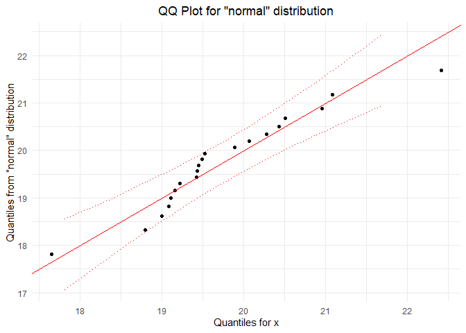
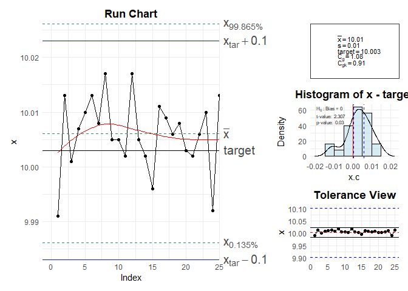
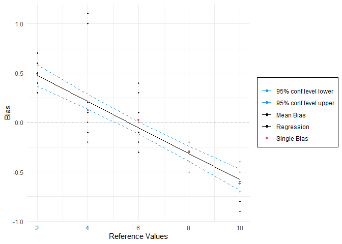

The goal of r6qualitytools is to provide a comprehensive suite of statistical tools for Quality Management, designed around the Define, Measure, Analyze, Improve, and Control (DMAIC) cycle used in Six Sigma methodology. It builds on the original discontinued CRAN package qualitytools, enhancing it with R6 object-oriented programming, modernizing the graphics with ggplot2 and plotly, and adopting tidyverse principles for data manipulation and visualization.
Installation
install.packages("r6qualitytools")
library("r6qualitytools")Overview
r6qualitytools includes various tools to manage quality science processes efficiently:
- DMAIC methodology: tools designed around the Six Sigma cycle.
- R6-based design: uses R6 classes for flexibility and performance.
- Interactive graphics: modern visualizations with ggplot2 and plotly.
- tidyverse integration: easy data manipulation and visualization.
It supports a variety of analyses relevant to quality management, offering an intuitive interface for both beginners and advanced users.
For more details, see the package documentation.
Usage
You can use the package to generate statistical models and control charts efficiently. Here are basic examples that demonstrates the use of the package:
library(r6qualitytools)
# Object of Class Distr - Normal
set.seed(123)
data <- rnorm(100, mean = 5, sd = 2)
parameters <- list(mean = 5, sd = 2)
distr <- Distr$new(x = data, name = "normal", parameters = parameters, sd = 2, n = 100, loglik = -120)
distr$plot()
# Class DistrCollection
data2 <- rpois(100, lambda = 3)
parameters2 <- list(lambda = 3)
distr2 <- Distr$new(x = data2, name = "poisson", parameters = parameters2, sd = sqrt(3), n = 100, loglik = -150)
distr2$plot()
collection <- DistrCollection$new()
collection$add(distr)
collection$add(distr2)
collection$summary()
#>
#> ------ Fitted Distribution and estimated parameters ------
#>
#> fitted distribution is normal :
#> $mean
#> [1] 5
#>
#> $sd
#> [1] 2
#>
#>
#> fitted distribution is poisson :
#> $lambda
#> [1] 3
#>
#>
#>
#> ------ Goodness of Fit - Anderson Darling Test ------
#>
#> Distribution A p.value
#> 1 normal 0.182 0.9104
#> 2 poisson 5.733 NA
# qqPlot and ppPlot
set.seed(1234)
x <- rnorm(20, mean = 20)
qqPlot(x, "normal", bounds.lty = 3, bounds.col = "red")
ppPlot(x, "normal", bounds.lty = 3, bounds.col = "red")
# Gage capacity
x <- c( 9.991, 10.013, 10.001, 10.007, 10.010, 10.013, 10.008, 10.017, 10.005, 10.005, 10.002,
10.017, 10.005, 10.002, 9.996, 10.011, 10.009 , 10.006, 10.008, 10.003, 10.002, 10.006,
10.010, 9.992, 10.013)
cg(x, target = 10.003, tolerance = c(9.903, 10.103))
# Process Capability
set.seed(1234)
data <- rnorm(20, mean = 20)
pcr(data, "normal", lsl = 17, usl = 23)
#> Scale for x is already present.
#> Adding another scale for x, which will replace the existing scale.
#> Anderson Darling Test for normal distribution
#>
#> data: data
#> A = 0.5722, mean = 19.749, sd = 1.014, p-value = 0.1191
#> alternative hypothesis: true distribution is not equal to normal
# Gage R&R Design
gdo <- gageRRDesign(Operators = 3, Parts = 10, Measurements = 3, randomize = FALSE, method='nested')
# vector of responses
y <- c(0.29,0.08, 0.04,-0.56,-0.47,-1.38,1.34,1.19,0.88,0.47,0.01,0.14,-0.80,
-0.56,-1.46, 0.02,-0.20,-0.29,0.59,0.47,0.02,-0.31,-0.63,-0.46,2.26,
1.80,1.77,-1.36,-1.68,-1.49,0.41,0.25,-0.11,-0.68,-1.22,-1.13,1.17,0.94,
1.09,0.50,1.03,0.20,-0.92,-1.20,-1.07,-0.11, 0.22,-0.67,0.75,0.55,0.01,
-0.20, 0.08,-0.56,1.99,2.12,1.45,-1.25,-1.62,-1.77,0.64,0.07,-0.15,-0.58,
-0.68,-0.96,1.27,1.34,0.67,0.64,0.20,0.11,-0.84,-1.28,-1.45,-0.21,0.06,
-0.49,0.66,0.83,0.21,-0.17,-0.34,-0.49,2.01,2.19,1.87,-1.31,-1.50,-2.16)
gdo$response(y)
gdo <- gageRR(gdo, method='nested')
#>
#> AnOVa Table - nested Design
#> Df Sum Sq Mean Sq F value Pr(>F)
#> Operator 2 0.01 0.003 0.029 0.972
#> Operator:Part 27 89.03 3.298 35.283 <2e-16 ***
#> Residuals 60 5.61 0.093
#> ---
#> Signif. codes: 0 '***' 0.001 '**' 0.01 '*' 0.05 '.' 0.1 ' ' 1
#>
#> ----------
#>
#> Gage R&R
#> VarComp VarCompContrib Stdev StudyVar StudyVarContrib
#> totalRR 0.0935 0.0805 0.306 1.83 0.284
#> repeatability 0.0935 0.0805 0.306 1.83 0.284
#> reproducibility 0.0000 0.0000 0.000 0.00 0.000
#> Part to Part 1.0680 0.9195 1.033 6.20 0.959
#> totalVar 1.1615 1.0000 1.078 6.47 1.000
#>
#> ---
#> * Contrib equals Contribution in %
#> **Number of Distinct Categories (truncated signal-to-noise-ratio) = 4
# Using Plots
gdo$errorPlot()
gdo$whiskersPlot()
gdo$averagePlot()
gdo$compPlot()
# Factorial Designs
vp.full <- facDesign(k = 3)
y = rnorm(2^3)
vp.full$.response(y)
vp.full$summary()
#> Information about the factors:
#>
#> A B C
#> low -1 -1 -1
#> high 1 1 1
#> name A B C
#> unit
#> type numeric numeric numeric
#> -----------
#> StandOrder RunOrder Block A B C y
#> 7 7 1 1 -1 1 1 0.03572991
#> 2 2 2 1 1 -1 -1 0.11297506
#> 6 6 3 1 1 -1 1 1.42855203
#> 1 1 4 1 -1 -1 -1 0.98340378
#> 4 4 5 1 1 1 -1 -0.62245679
#> 3 3 6 1 -1 1 -1 -0.73153600
#> 8 8 7 1 1 1 1 -0.51666972
#> 5 5 8 1 -1 -1 1 -1.75073344
vp.full$effectPlot()
# Plots
paretoPlot(vp.full, p.col = "Pastel1")
#> Scale for y is already present.
#> Adding another scale for y, which will replace the existing scale.
normalPlot(vp.full)
wire1 <- wirePlot(A,B,y, data = vp.full)
wire1$plot
contour1 <- contourPlot(A,B,y, data = vp.full)
contour1$plot
# Mix Design
mdo <- mixDesign(3, 2, center = FALSE, axial = FALSE, randomize = FALSE, replicates = c(1, 1, 2, 3))
mdo$names(c("polyethylene", "polystyrene", "polypropylene"))
elongation <- c(11.0, 12.4, 15.0, 14.8, 16.1, 17.7, 16.4, 16.6, 8.8, 10.0, 10.0, 9.7, 11.8, 16.8, 16.0)
mdo$.response(elongation)
mdo$summary()
#> Simplex LATTICE Design
#> Information about the factors:
#>
#> polyethylene polystyrene polypropylene
#> low 0 0 0
#> high 1 1 1
#> name polyethylene polystyrene polypropylene
#> unit % % %
#> type numeric numeric numeric
#>
#> -----------
#>
#> Information about the Design Points:
#>
#> 1-blend 2-blend
#> Unique 3 3
#> Replicates 2 3
#> Sub Total 6 9
#> Total 15
#>
#> -----------
#>
#> Information about the constraints:
#>
#> A >= 0 B >= 0 C >= 0
#>
#> -----------
#>
#> PseudoComponent _|_ Proportion _|_ Amount
#>
#> StandOrder RunOrder Type | A B C _ | _ A B C _ | _ A B
#> 1 1 1 1-blend | 1.0 0.0 0.0 | 1.0 0.0 0.0 | 1.0 0.0
#> 2 2 2 1-blend | 1.0 0.0 0.0 | 1.0 0.0 0.0 | 1.0 0.0
#> 3 3 3 2-blend | 0.5 0.5 0.0 | 0.5 0.5 0.0 | 0.5 0.5
#> 4 4 4 2-blend | 0.5 0.5 0.0 | 0.5 0.5 0.0 | 0.5 0.5
#> 5 5 5 2-blend | 0.5 0.5 0.0 | 0.5 0.5 0.0 | 0.5 0.5
#> 6 6 6 2-blend | 0.5 0.0 0.5 | 0.5 0.0 0.5 | 0.5 0.0
#> 7 7 7 2-blend | 0.5 0.0 0.5 | 0.5 0.0 0.5 | 0.5 0.0
#> 8 8 8 2-blend | 0.5 0.0 0.5 | 0.5 0.0 0.5 | 0.5 0.0
#> 9 9 9 1-blend | 0.0 1.0 0.0 | 0.0 1.0 0.0 | 0.0 1.0
#> 10 10 10 1-blend | 0.0 1.0 0.0 | 0.0 1.0 0.0 | 0.0 1.0
#> 11 11 11 2-blend | 0.0 0.5 0.5 | 0.0 0.5 0.5 | 0.0 0.5
#> 12 12 12 2-blend | 0.0 0.5 0.5 | 0.0 0.5 0.5 | 0.0 0.5
#> 13 13 13 2-blend | 0.0 0.5 0.5 | 0.0 0.5 0.5 | 0.0 0.5
#> 14 14 14 1-blend | 0.0 0.0 1.0 | 0.0 0.0 1.0 | 0.0 0.0
#> 15 15 15 1-blend | 0.0 0.0 1.0 | 0.0 0.0 1.0 | 0.0 0.0
#> C | elongation
#> 1 0.0 | 11.0
#> 2 0.0 | 12.4
#> 3 0.0 | 15.0
#> 4 0.0 | 14.8
#> 5 0.0 | 16.1
#> 6 0.5 | 17.7
#> 7 0.5 | 16.4
#> 8 0.5 | 16.6
#> 9 0.0 | 8.8
#> 10 0.0 | 10.0
#> 11 0.5 | 10.0
#> 12 0.5 | 9.7
#> 13 0.5 | 11.8
#> 14 1.0 | 16.8
#> 15 1.0 | 16.0
#>
#> -----------
#>
#> Mixture Total: 1 equals 1
contour3 <- contourPlot3(A, B, C, elongation, data = mdo, form = "quadratic")
contour3$plot
wire3 <- wirePlot3(A, B, C, elongation, data = mdo, form = "quadratic")
wire3$plot
# Taguchi Design
tdo <- taguchiDesign("L9_3",randomize=F)
tdo$values(list(A = c("material 1", "material 2", "material 3"), B = c(29, 30, 35)))
tdo$names(c("Factor 1", "Factor 2", "Factor 3", "Factor 4"))
set.seed(1)
tdo$.response(rnorm(9))
tdo$summary()
#> Taguchi SINGLE Design
#> Information about the factors:
#>
#> A B C D
#> value 1 material 1 29 1 1
#> value 2 material 2 30 2 2
#> value 3 material 3 35 3 3
#> name Factor 1 Factor 2 Factor 3 Factor 4
#> unit
#> type numeric numeric numeric numeric
#>
#> -----------
#>
#> StandOrder RunOrder Replicate A B C D rnorm(9)
#> 1 1 1 1 1 1 1 1 -0.6264538
#> 2 2 2 1 1 2 2 2 0.1836433
#> 3 3 3 1 1 3 3 3 -0.8356286
#> 4 4 4 1 2 1 2 3 1.5952808
#> 5 5 5 1 2 2 3 1 0.3295078
#> 6 6 6 1 2 3 1 2 -0.8204684
#> 7 7 7 1 3 1 3 2 0.4874291
#> 8 8 8 1 3 2 1 3 0.7383247
#> 9 9 9 1 3 3 2 1 0.5757814
#>
#> -----------
tdo$effectPlot()
# Plackett-Burman Design
pbdo<- pbDesign(26)
pbdo$summary()
#> Plackett-Burman Design
#> Information about the factors:
#>
#> A B C D E F G H J
#> value 1 -1 -1 -1 -1 -1 -1 -1 -1 -1
#> value 2 1 1 1 1 1 1 1 1 1
#> name
#> unit
#> type numeric numeric numeric numeric numeric numeric numeric numeric numeric
#> K L M N O P Q R S
#> value 1 -1 -1 -1 -1 -1 -1 -1 -1 -1
#> value 2 1 1 1 1 1 1 1 1 1
#> name
#> unit
#> type numeric numeric numeric numeric numeric numeric numeric numeric numeric
#> T U V W X Y Z
#> value 1 -1 -1 -1 -1 -1 -1 -1
#> value 2 1 1 1 1 1 1 1
#> name
#> unit
#> type numeric numeric numeric numeric numeric numeric numeric
#>
#> -----------
#>
#> StandOrder RunOrder Replicate A B C D E F G H J K L M N O P
#> 1 16 1 1 1 -1 1 1 -1 -1 -1 1 1 1 1 1 -1 -1 1
#> 2 11 2 1 -1 -1 1 1 1 1 1 -1 -1 1 -1 -1 -1 -1 1
#> 3 18 3 1 1 1 1 -1 1 1 -1 -1 -1 1 1 1 1 1 -1
#> 4 17 4 1 1 1 -1 1 1 -1 -1 -1 1 1 1 1 1 -1 -1
#> 5 6 5 1 1 1 -1 -1 1 -1 -1 -1 -1 1 -1 1 -1 1 1
#> 6 19 6 1 -1 1 1 1 -1 1 1 -1 -1 -1 1 1 1 1 1
#> 7 2 7 1 1 -1 -1 -1 -1 1 -1 1 -1 1 1 1 -1 1 1
#> 8 24 8 1 -1 -1 1 -1 1 -1 1 1 1 -1 1 1 -1 -1 -1
#> 9 3 9 1 -1 1 -1 -1 -1 -1 1 -1 1 -1 1 1 1 -1 1
#> 10 1 10 1 -1 -1 -1 -1 1 -1 1 -1 1 1 1 -1 1 1 -1
#> 11 26 11 1 -1 -1 -1 -1 -1 -1 -1 -1 -1 -1 -1 -1 -1 -1 -1
#> 12 15 12 1 -1 1 1 -1 -1 -1 1 1 1 1 1 -1 -1 1 -1
#> 13 25 13 1 -1 -1 -1 1 -1 1 -1 1 1 1 -1 1 1 -1 -1
#> 14 8 14 1 1 1 1 1 -1 -1 1 -1 -1 -1 -1 1 -1 1 -1
#> 15 4 15 1 -1 -1 1 -1 -1 -1 -1 1 -1 1 -1 1 1 1 -1
#> 16 20 16 1 1 -1 1 1 1 -1 1 1 -1 -1 -1 1 1 1 1
#> 17 23 17 1 -1 1 -1 1 -1 1 1 1 -1 1 1 -1 -1 -1 1
#> 18 10 18 1 -1 1 1 1 1 1 -1 -1 1 -1 -1 -1 -1 1 -1
#> 19 13 19 1 1 -1 -1 -1 1 1 1 1 1 -1 -1 1 -1 -1 -1
#> 20 14 20 1 1 1 -1 -1 -1 1 1 1 1 1 -1 -1 1 -1 -1
#> 21 5 21 1 1 -1 -1 1 -1 -1 -1 -1 1 -1 1 -1 1 1 1
#> 22 9 22 1 1 1 1 1 1 -1 -1 1 -1 -1 -1 -1 1 -1 1
#> 23 22 23 1 1 -1 1 -1 1 1 1 -1 1 1 -1 -1 -1 1 1
#> 24 7 24 1 1 1 1 -1 -1 1 -1 -1 -1 -1 1 -1 1 -1 1
#> 25 21 25 1 -1 1 -1 1 1 1 -1 1 1 -1 -1 -1 1 1 1
#> 26 12 26 1 -1 -1 -1 1 1 1 1 1 -1 -1 1 -1 -1 -1 -1
#> Q R S T U V W X Y Z y
#> 1 -1 -1 -1 -1 1 -1 1 -1 1 1 NA
#> 2 -1 1 -1 1 1 1 -1 1 1 -1 NA
#> 3 -1 1 -1 -1 -1 -1 1 -1 1 -1 NA
#> 4 1 -1 -1 -1 -1 1 -1 1 -1 1 NA
#> 5 1 -1 1 1 -1 -1 -1 1 1 1 NA
#> 6 -1 -1 1 -1 -1 -1 -1 1 -1 1 NA
#> 7 -1 -1 -1 1 1 1 1 1 -1 -1 NA
#> 8 1 1 1 1 1 -1 -1 1 -1 -1 NA
#> 9 1 -1 -1 -1 1 1 1 1 1 -1 NA
#> 10 -1 -1 1 1 1 1 1 -1 -1 1 NA
#> 11 -1 -1 -1 -1 -1 -1 -1 -1 -1 -1 NA
#> 12 -1 -1 -1 1 -1 1 -1 1 1 1 NA
#> 13 -1 1 1 1 1 1 -1 -1 1 -1 NA
#> 14 1 1 1 -1 1 1 -1 -1 -1 1 NA
#> 15 1 1 -1 -1 -1 1 1 1 1 1 NA
#> 16 1 -1 -1 1 -1 -1 -1 -1 1 -1 NA
#> 17 1 1 1 1 -1 -1 1 -1 -1 -1 NA
#> 18 1 -1 1 1 1 -1 1 1 -1 -1 NA
#> 19 -1 1 -1 1 -1 1 1 1 -1 1 NA
#> 20 -1 -1 1 -1 1 -1 1 1 1 -1 NA
#> 21 -1 1 1 -1 -1 -1 1 1 1 1 NA
#> 22 -1 1 1 1 -1 1 1 -1 -1 -1 NA
#> 23 1 1 1 -1 -1 1 -1 -1 -1 -1 NA
#> 24 1 1 -1 1 1 -1 -1 -1 1 1 NA
#> 25 1 1 -1 -1 1 -1 -1 -1 -1 1 NA
#> 26 1 -1 1 -1 1 1 1 -1 1 1 NA
#>
#> -----------
# gageLin Design
A=c(2.7,2.5,2.4,2.5,2.7,2.3,2.5,2.5,2.4,2.4,2.6,2.4)
B=c(5.1,3.9,4.2,5,3.8,3.9,3.9,3.9,3.9,4,4.1,3.8)
C=c(5.8,5.7,5.9,5.9,6,6.1,6,6.1,6.4,6.3,6,6.1)
D=c(7.6,7.7,7.8,7.7,7.8,7.8,7.8,7.7,7.8,7.5,7.6,7.7)
E=c(9.1,9.3,9.5,9.3,9.4,9.5,9.5,9.5,9.6,9.2,9.3,9.4)
test=gageLinDesign(ref=c(2,4,6,8,10),n=12)
Messungen=data.frame(rbind(A,B,C,D,E))
test$response(Messungen)
test$summary()
#> ----------------------
#> Part Ref X1 X2 X3 X4 X5 X6 X7 X8 X9 X10 X11 X12
#> A 1 2 2.7 2.5 2.4 2.5 2.7 2.3 2.5 2.5 2.4 2.4 2.6 2.4
#> B 2 4 5.1 3.9 4.2 5.0 3.8 3.9 3.9 3.9 3.9 4.0 4.1 3.8
#> C 3 6 5.8 5.7 5.9 5.9 6.0 6.1 6.0 6.1 6.4 6.3 6.0 6.1
#> D 4 8 7.6 7.7 7.8 7.7 7.8 7.8 7.8 7.7 7.8 7.5 7.6 7.7
#> E 5 10 9.1 9.3 9.5 9.3 9.4 9.5 9.5 9.5 9.6 9.2 9.3 9.4
#> ----------------------
MSALin=gageLin(test,lty=c(3,4), plot = FALSE)
#> ----------------------
#> BIAS:
#> X1 X2 X3 X4 X5 X6 X7 X8 X9 X10 X11 X12
#> A 0.7 0.5 0.4 0.5 0.7 0.3 0.5 0.5 0.4 0.4 0.6 0.4
#> B 1.1 -0.1 0.2 1.0 -0.2 -0.1 -0.1 -0.1 -0.1 0.0 0.1 -0.2
#> C -0.2 -0.3 -0.1 -0.1 0.0 0.1 0.0 0.1 0.4 0.3 0.0 0.1
#> D -0.4 -0.3 -0.2 -0.3 -0.2 -0.2 -0.2 -0.3 -0.2 -0.5 -0.4 -0.3
#> E -0.9 -0.7 -0.5 -0.7 -0.6 -0.5 -0.5 -0.5 -0.4 -0.8 -0.7 -0.6
#> ----------------------
#> MEAN OF BIAS:
#> A B C D E
#> 0.4916667 0.1250000 0.0250000 -0.2916667 -0.6166667
#> ----------------------
#> LINEAR MODEL:
#>
#> Call:
#> lm(formula = BIAS ~ ref)
#>
#> Residuals:
#> Min 1Q Median 3Q Max
#> -0.41000 -0.12000 0.01667 0.11667 0.89000
#>
#> Coefficients:
#> Estimate Std. Error t value Pr(>|t|)
#> (Intercept) 0.73667 0.07252 10.16 1.73e-14 ***
#> ref -0.13167 0.01093 -12.04 < 2e-16 ***
#> ---
#> Signif. codes: 0 '***' 0.001 '**' 0.01 '*' 0.05 '.' 0.1 ' ' 1
#>
#> Residual standard error: 0.2395 on 58 degrees of freedom
#> Multiple R-squared: 0.7143, Adjusted R-squared: 0.7094
#> F-statistic: 145 on 1 and 58 DF, p-value: < 2.2e-16
#>
#> ----------------------
#> LINEARITY:
#> 13.16667
MSALin$plot()
Getting help
If you encounter any issues or have questions, please file an issue with a reproducible example at the GitHub repo.